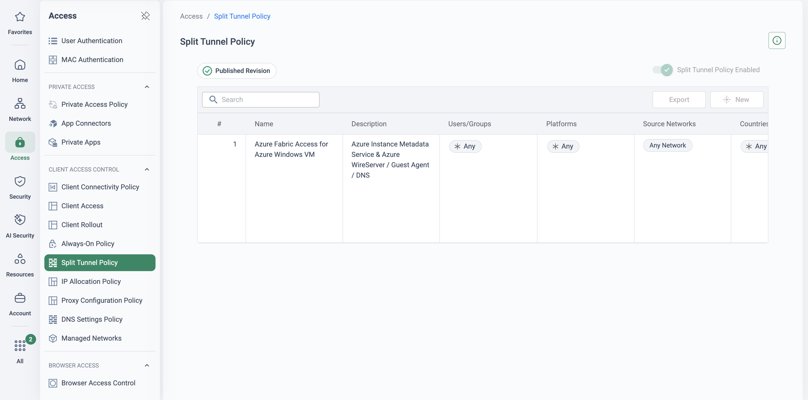

Why this matters
This plan is authored from Cloudflare and Cato documentation plus the Cato PS migration methodology — not from a completed, referenceable Cloudflare migration. Review it with Cato Professional Services before using it with a customer, especially the Access policy mapping scope, the service-token inventory and the egress-IP re-keying plan.
Cloudflare almost always lands in an account through the CDN / WAF / DNS side — the website, the API, the DDoS story — and Zero Trust is adopted afterwards, app-by-app. The commercial model encourages exactly this: a genuinely free Zero Trust plan for up to 50 users, then self-serve pay-as-you-go, then a negotiated Enterprise contract. What discovery finds is rarely a designed SASE estate — it is an accretion of per-feature configuration across Access, Gateway, Tunnels and Magic WAN, sometimes split across teams and even across Cloudflare accounts.
The "free / cheap" perception is set by the entry tiers, but the capabilities an enterprise actually needs sit in add-ons and contracts: Browser Isolation is a paid add-on (pay-as-you-go and Enterprise plans); dedicated egress IPs are an Enterprise add-on; custom DLP, long log retention and SIEM integrations sit in the Enterprise contract; Magic WAN is a separately purchased network service. Get the customer's real invoice on the table before any price debate.
Branch networking is the thin end of the estate. Magic WAN connects sites via anycast GRE or IPsec tunnels from the customer's existing routers and firewalls; Cloudflare does now ship a lightweight box — the Magic WAN Connector, renamed the Cloudflare One Appliance — so "no appliance at all" is not a fair line. Be accurate about what its own reference documentation shows instead: ICMP is routed to the internet and bypasses Gateway inspection, there is no fail-open mode, HA failover can take up to 30 seconds, and the reference documents no QoS or bandwidth-management capability — priority steering, not shaping. There is no published last-mile management service either; the ISP relationship stays the customer's problem.
On analyst positioning: in the 2026 Gartner Magic Quadrant for SASE Platforms (report dated 28 July 2026), Cato is a Leader for the third consecutive year and Cloudflare is again the sole Visionary, as it was in 2025. Gartner's 2025 estimate of roughly 400 active enterprise SASE customers for Cloudflare has not been restated in the 2026 report, so do not quote it as current. Honest framing for the room: Cloudflare's network and web-facing ZTNA are genuinely strong. The gap is SASE platform maturity on the WAN/branch side and enterprise operational depth. Sell the platform difference, not FUD about their network.
This migration covers Zero Trust and WAN only: Access, Gateway, WARP, cloudflared and Magic WAN. Cato does not replace Cloudflare's CDN, WAF, authoritative DNS, Workers or Magic Transit — and should not try. Write a stays-on-Cloudflare register in phase 1 (CDN/WAF zones, DNS, Workers, Magic Transit prefixes, email security) and agree it with the customer: it defuses the "you're asking us to leave Cloudflare" objection early. The end-state is a live Cloudflare tenant serving the web estate with its Zero Trust seats reduced — the subscription is downgraded, never the account deleted.
"Could you produce, today, a complete list of your Access applications, service tokens, cloudflared tunnels and dedicated egress IPs — and say which Cloudflare account and plan tier each one lives in?" Fragmented, multi-account Zero Trust estates are the norm, not the exception — and the service tokens and egress-IP allowlists are the items that break silently mid-migration if they are not found here.
What maps to what
Every Zero Trust and WAN function has a Cato home — and two rows deliberately say "stays on Cloudflare". Two mappings change shape rather than name: Access policies become firewall rules against app segments (rebuild the intent, don't transliterate rule-for-rule), and cloudflared's per-app daemons are replaced by site-level connectivity — one Socket typically replaces several connectors at once.
| Cloudflare component | Cato equivalent | Migration note |
|---|---|---|
| Access applications + policies (self-hosted, private-network, SaaS; service tokens) | Cato ZTNA (SDP): WAN / Internet Firewall rules per user/group against app segments, + Client Connectivity Policy and device posture | Network-integrated ZTNA — app entitlements are firewall rules against application/segment objects. Service tokens have no like-for-like equivalent: map machine-to-machine flows to site-to-site paths or IP-scoped rules and validate each one |
| Access App Launcher / clientless web access | Cato Browser Access (Application Portal) | SSO-authenticated clientless HTTP/S publishing, per-app, with no direct user-to-network connectivity |
| Gateway DNS policies + DNS locations | Cato DNS Security + Internet Firewall categories | DNS inspected in-line at the PoP for traffic already on Cato — no separate "DNS location" construct to maintain. Re-point office DNS last, after the site's traffic has moved |
| Gateway HTTP + network policies, TLS inspection | Internet Firewall / SWG + TLS Inspection | Same category/app/action model (Allow / Block / Prompt); Cato adds RBI "Isolate" as a policy action. Rebuild Do-Not-Inspect lists as TLS-inspection exceptions |
| WARP / Cloudflare One Client + device posture | Cato Client + Device Posture profiles | Like-for-like swap per cohort — one agent for ZTNA, SWG and DEM on Cato too. Never run both agents on one device (see co-existence) |
| Cloudflare Tunnel (cloudflared) connectors | Socket / vSocket (AWS, Azure) / IPsec site + ZTNA or Browser Access publication | Cato connects networks, not per-app daemons — each connector's target network needs a Cato path before that connector retires |
| Magic WAN (anycast GRE/IPsec) + Magic WAN Connector / Cloudflare One Appliance | Cato Socket (or IPsec IKEv2 site) onto the Global Private Backbone | What Cato adds: a managed SD-WAN appliance with HA and link steering, QoS / bandwidth-management profiles, ILMM (NOC-monitored last mile with proactive ISP ticketing) and an SLA-backed backbone |
| Browser Isolation (paid add-on) | Cato RBI — "Isolate" policy action | Isolation is a policy action alongside Block/Prompt (Authentic8-powered), not a per-user add-on SKU decision |
| DEX (Digital Experience Monitoring) | Cato Digital Experience Monitoring | Draws on existing sensors — Client, Socket, PoPs, backbone — no extra agents; hop-by-hop Wi-Fi → edge → WAN visibility |
| CASB / DLP (tier-dependent) | Cato CASB + DLP (Data Control policy) | Inline + API CASB with App Catalog risk scores; map sanctioned-app and DLP profiles during the phase-3 rollout |
| Magic Transit | No Cato equivalent — retain on Cloudflare | Network-layer DDoS scrubbing for BGP-advertised public prefixes is out of SASE scope. Say so explicitly — it builds credibility |
| CDN / WAF / authoritative DNS / Workers | Stays on Cloudflare | Not a SASE workload. The tenant stays live for the web estate; only the Zero Trust subscription winds down |
Five phases, cohort by cohort
Anchored to the Cato PS methodology — Discover & Design → Pilot, Build & Initial Rollout → Advanced Security & Broader Rollout → Tune & Optimise — with waved, business-unit-based SDP migration groups and phased TLS inspection. The unit of migration is the cohort: a user wave, a site, or an application, each with its own rollback lever.
-
Discover & design — export the estate, write the stays-on-Cloudflare register
Inventory precisely; the estate is usually more fragmented than the customer believes. Access: every application and its include/require/exclude policies, IdP integrations (often several), service tokens (find the machine consumers — they break silently), posture rules tied to WARP. Gateway: DNS policies and DNS locations, HTTP/network policies, TLS-inspection state and the root-certificate deployment mechanism, Do-Not-Inspect lists. Connectivity: every cloudflared connector (host, replicas, which apps/networks ride it), every Magic WAN tunnel and any Cloudflare One Appliance, the WARP split-tunnel configuration. Egress: third-party SaaS allowlists keyed to dedicated egress IPs.
If the customer manages Cloudflare as code, the Terraform repo is the inventory; if not, use Cloudflare's cf-terraforming tool to export existing resources to HCL — it doubles as a point-in-time configuration snapshot for the runbook. Write and agree the stays-on-Cloudflare register (CDN/WAF, authoritative DNS, Workers, Magic Transit, email security). Stand up the Cato foundation in parallel: IdP/SSO + SCIM, PoP/region plan, Socket logistics, TLS-inspection certificate readiness. Design decisions: Socket vs IPsec per site; Client-based ZTNA vs Browser Access per app; TLS-inspection wave plan by category; Cato allocated egress IPs per region.
-
Pilot — parallel Socket site, then the WARP → Cato Client cohort swap
Access → Client Connectivity Policy Monitor → Experience Monitoring
Deploy a Socket at one representative branch (or IPsec from the existing router if hardware hasn't shipped) and validate internet and WAN paths in parallel with Magic WAN, which stays up untouched. Convert the SWG baseline from Cato's recommended policies, then the customer's Gateway intent; convert Access apps to ZTNA rules for the pilot's applications.
For pilot users, treat WARP and the Cato Client as mutually exclusive on a device — never dual-agent. Cloudflare's own guidance describes its client and any other VPN agent as competing for routing, DNS and firewall control; Cato documents client coexistence limits too. The clean pattern: per cohort, disable/remove the WARP profile via MDM, then deploy the Cato Client — same maintenance window, per-device, reversible. Use pilot user groups in the Client Upgrade Policy to control version rollout, and capture a DEM baseline plus per-app access parity before widening.
-
Roll out — BU waves, Magic WAN re-termination, connector retirement, DNS last
Security → Internet Firewall Security → TLS Inspection
Users: waved, business-unit-based SDP migration groups with posture analysis and Client Connectivity Policy tuning per wave. Sites: re-terminate Magic WAN sites one at a time — a Socket per site as the end-state, or an interim IPsec IKEv2 tunnel from the existing edge (primary + secondary tunnels to different Cato PoP IPs, per Cato's HA best practice). Private apps: as each app's ZTNA rules or Browser Access publication is validated, retire its cloudflared connector — one Socket typically covers several connectors, but sequence retirement app-by-app so rollback stays granular. DNS: roaming users move automatically with the client swap; re-point office DNS locations only after the site's traffic is on Cato — never leave a site's DNS on Cloudflare once its traffic path has moved, or policy and logging split across two vendors. Phase TLS inspection by URL category; run CASB and DLP in monitor mode before enforcing; replicate Browser Isolation intent as RBI "Isolate" actions on risky/uncategorised categories.
-
Co-exist deliberately — per-app parallel ZTNA, per-layer rollback
An Access application and its Cato ZTNA rules can be live simultaneously — pilot users reach the app via Cato while everyone else still comes through Access, and the cloudflared connector keeps serving Access until the last cohort moves. Cutover is per-app and per-cohort, never big-bang. Keep the WARP MDM profile and Zero Trust enrolment intact (not deleted), Magic WAN tunnel configurations idle but in place, and old egress IPs allowed in third-party SaaS allowlists until each wave completes. Details and levers in the next section.
-
Optimise, then retire in order — and downgrade the tenant
Network → Bandwidth Management Monitor → Events
QoS and bandwidth-management profiles per site, policy fine-tuning from analytics, documentation, admin training, operational handover. Then decommission in dependency order: cloudflared connectors → Magic WAN tunnels/appliances → Gateway policies and DNS locations → Access applications → WARP/MDM artefacts → reduce Zero Trust seats. Do not delete the Cloudflare account: CDN, WAF, authoritative DNS — and Magic Transit, if present — remain live. The Zero Trust subscription is downgraded, not the tenant closed.
One of the safer co-existence stories
Cloudflare-to-Cato co-existence is comparatively low-drama because the two control planes barely touch: the retained Cloudflare services (CDN, WAF, DNS, Magic Transit) sit in front of public traffic, while Cato takes over the users and sites behind them. The one hard rule is the endpoint: swap the agent, never overlap it — both vendors document the routing/DNS/firewall contention when two full-tunnel clients share a device.
Rollback levers, per layer
Users — one device operation
Re-enable the WARP (Cloudflare One Client) profile via MDM and remove the Cato Client; the user is back on Cloudflare in one push. Keep the WARP MDM profile and Zero Trust enrolment intact for the whole migration window.
Sites — re-point the routing
Magic WAN tunnel configurations (and any Cloudflare One Appliance) stay in place but idle until phase 5; re-pointing routing back to the existing GRE/IPsec tunnels restores the old path without re-provisioning.
Private apps — parallel ZTNA
The Access app and its cloudflared connector keep serving non-migrated cohorts while Cato serves the pilot. Retiring connectors app-by-app keeps the rollback unit small even when one Socket replaced several.
DNS — re-point per site
Office DNS rolls back by re-pointing to Cloudflare resolver/DoH endpoints; roaming users roll back automatically with the agent swap, which carries DNS protection with it in both directions.
The Cloudflare tenant stays for CDN, WAF, authoritative DNS, Workers and Magic Transit. Public-facing services keep their Cloudflare proxy and WAF in front; Cato secures the users and sites behind them. Position this as an architectural division of labour — not a partial failure of the migration.
Where to be careful — and honest
"Cloudflare is basically free"
True at the entry tiers (free ≤50 users, self-serve pay-as-you-go) — and that anchor must be defused. The enterprise comparison includes the add-ons (Browser Isolation, dedicated egress IPs), Enterprise contract features (custom DLP, retention, SIEM), Magic WAN, the appliance hardware and the operational cost of the DIY glue at branches. Compare invoices and run the TCO on the converged estate, never on list per-seat price.
Dual agents — never "test alongside"
Do not let anyone trial Cato beside WARP on the same laptop. Cloudflare's own docs describe its client and any other VPN agent as competing for routing, DNS and firewall control with responsibilities split per product; Cato documents client coexistence limits in "Preparing to Install the Cato Client". Cohort swap via MDM, one agent at a time — same window, reversible.
Config-as-code parity
Cloudflare's developer-first customers often manage everything in Terraform and will ask if they lose that. They don't: Cato has a public Terraform provider (catonetworks/cato — Socket sites, IPsec sites, WAN firewall rules, routing, identity) plus a GraphQL API and certified modules for bulk sites and vSockets. Be honest about the caveat: the API executes sequentially, so Cato recommends running Terraform with parallelism=1. Use cf-terraforming on the Cloudflare side as the export.
Egress-IP allowlists
Enterprise customers on dedicated egress IPs (including BYOIP egress) typically have third-party SaaS allowlists keyed to those IPs. Every one must be re-keyed to the customer's Cato allocated IPs — per app, during that app's cutover window, with the old Cloudflare IPs left allowed until the wave completes. Find them in phase 1; they are the most common cause of "it worked yesterday" tickets.
No appliance to swap
Many Cloudflare Zero Trust sites never had an edge device — a cloudflared daemon on a VM and WARP on laptops was the whole footprint. A Socket is therefore an addition to the site, not a swap. Where no hardware is wanted, use a vSocket (cloud) or IPsec from existing kit, or serve small sites Client-only. Frame the Socket as what makes the site a first-class WAN citizen — QoS, HA, last-mile visibility, ILMM eligibility — not an imposed box.
"Cloudflare has the bigger network"
Concede PoP count gracefully — Gartner's MQ summaries credit Cloudflare's network coverage and innovation. Pivot to what the SASE decision turns on: a platform placed as a Leader three years running (2024–2026), an SD-WAN edge with QoS and a managed last mile, and one policy engine for WAN + security — the areas where the 2026 report again places Cloudflare as a Visionary.
Naming churn in discovery
Cloudflare renamed components across 2024–2026 and customers mix the names freely: WARP is the "Cloudflare One Client", Magic WAN docs sit under "Cloudflare WAN", the Magic WAN Connector became the "Cloudflare One Appliance", and the suite has been Teams → Zero Trust → Cloudflare One. Inventory by capability, not by the brand name the customer remembers.
Access service tokens
Machine-to-machine flows authenticated by Access service tokens do not map one-to-one onto user-centric ZTNA. Identify every consumer in phase 1 and design each flow explicitly — a site-to-site path or an IP-scoped firewall rule — before its Access application is retired. These are the flows that break silently.
Use the documented gaps accurately and stop there: ICMP bypassing Gateway from the Cloudflare One Appliance, no fail-open, up-to-30-second failover, no QoS in the Connector reference, and the add-on SKUs — all sourced from Cloudflare's own docs. Do not extrapolate beyond them, and do not attack the Cloudflare network itself: their global edge and web-facing ZTNA are genuinely strong. The differential is platform convergence, the SD-WAN edge and enterprise operational depth.
How to prove it in the customer's tenant
A Cloudflare displacement is proven the way this page says it is migrated: bounded, cohort by cohort, with the web estate untouched. The pilot that de-risks the decision has three legs — one user cohort swapped from WARP to the Cato Client with a Gateway HTTP/DNS policy slice at parity in monitor mode, a handful of named Access applications replaced by Cato ZTNA with device posture enforced, and (only where Magic WAN is actually in the estate) one site's tunnel re-pointed to a Cato IPsec site. Everything else — every other user, every other Access app, the CDN, WAF and authoritative DNS — stays exactly where it is. Run it under the discipline of the PoV framework: agree the success criteria below before anything is configured, and book the decision meeting the same day. And be straight about what the pilot proves: the converged difference — one client, one policy engine, a managed WAN edge — not a failure of Cloudflare's network, which keeps the public web estate throughout.
Success criteria
Every row's artefact goes into a dated evidence pack, exported as it lands — the wrap-up reads the pack, not memories.
| Success criterion | Evidence artefact | Where it lives |
|---|---|---|
| Every pilot user connects through the Cato Client with the WARP profile disabled, and is identified by name — never as an unidentified user | Connected cohort list with device, Client version and PoP | Access → Users · Monitor → Experience Monitoring |
| Gateway policy-slice parity — the agreed test list of blocked HTTP categories and DNS protections returns the same verdicts on Cato as on Gateway | Side-by-side policy-hit events: Cato event export next to the matching Gateway log lines | Monitor → Events (Internet firewall + DNS) + exported Gateway analytics |
| Named Access apps replaced — each pilot application reachable through Cato ZTNA for a compliant device, and refused when the device fails its posture profile | WAN Firewall allow events per app attributed to user and device, plus one recorded posture-failure refusal | Monitor → Events · Access → Client Connectivity Policy |
| Magic WAN re-point (only where Magic WAN exists) — one site's traffic re-terminated on a Cato IPsec site with both tunnels up, and the old tunnel config held idle for rollback | Site connectivity view with primary and secondary tunnels up; site traffic visible in events | Network → Sites · Monitor → Topology |
| No user-reported degradation — cohort experience scores hold through the pilot week, and no cohort-raised tickets against the helpdesk baseline | Experience Monitoring per-user scores across the pilot week, plus the helpdesk queue | Monitor → Experience Monitoring |
- Success criteria signed off and the decision meeting booked, per the PoV framework.
- Trial licences confirmed for every capability under test — TLS inspection if HTTP content verdicts are in the parity slice; RBI and DLP only if explicitly scoped.
- IdP integration connected, with a dedicated pilot group provisioned over SCIM and visibly syncing before any rule references it (see Identity Integration Design).
- TLS inspection staged first where content-level verdicts matter — certificate out via MDM, bypasses in, then inspection (see TLS Inspection: Staged Rollout Playbook).
- Scope is deliberately narrow: 10–25 users across two or three archetypes, three to five named Access applications, and at most one Magic WAN site — and the site leg only exists if Magic WAN is in the estate. Many Cloudflare Zero Trust estates have no WAN product at all; then this is a two-leg pilot.
- The stays-on-Cloudflare register from phase 1 is agreed in writing — CDN, WAF, authoritative DNS, Workers, Magic Transit are out of scope and never touched.
- Access service tokens are out of the pilot: machine-to-machine flows keep their Access applications and cloudflared connectors untouched throughout.
- WARP stays authoritative for everyone outside the cohort — nothing in this runbook touches the wider estate's enrolment or forwarding.
Configuration walkthrough
-
Provision the cohort and capture the before pack
Access → Users Monitor → Experience Monitoring
Create the pilot IdP group, confirm SCIM has synced it, and assemble the reference evidence from the Cloudflare side: 30 days of Gateway analytics for the cohort's users (top blocked and allowed categories, DNS policy hits), DEX test results where licensed, and the helpdesk ticket baseline for the same users. That export is the parity reference every verdict is judged against — and because the cohort has no Cato Client yet, it is the only "before" there is. Experience Monitoring starts scoring the cohort (per-user score, apps, PoP, TTFB) from the day of the swap in step 5.
-
Convert the Gateway slice — monitor-first
Security → Internet Firewall
Recreate only the Gateway HTTP and DNS rules the cohort actually hits, scoped to the pilot group as source, with Track = Event on every rule — events are the evidence. Cato's Internet firewall ends in an implicit any-any allow — the same default posture as Gateway's HTTP policies — so unmatched traffic behaves identically. Map categories by intent, not name, and arm blocks only for the agreed test list; everything else runs in monitor until its events prove it. Gateway's DNS-policy intent needs no DNS-location construct: Cato DNS Security inspects queries in-line at the PoP for any traffic already on Cato, whichever resolver the device uses, with Allow / Block / Sinkhole actions across eight protection categories. Full construct-by-construct mapping: Cloudflare Policy Migration.
-
Replace the named Access apps with ZTNA — posture included
Security → WAN Firewall Access → Client Connectivity Policy Access → Device Posture
For each of the three to five named applications, build an app segment holding only the application subnets, then a WAN Firewall allow rule from the pilot group to that segment — the WAN Firewall ends in an implicit block, so the rule is the entitlement, exactly as this page's mapping table describes. Access's posture conditions move to a Device Posture profile referenced from the Client Connectivity Policy: a device that fails its checks does not connect, and the Client tells the user why — record one deliberate posture failure (e.g. Priya's laptop with the EPP agent stopped) as evidence. The Access applications themselves stay live for everyone outside the cohort, and their cloudflared connectors keep serving them — nothing retires during the pilot.
-
Stage TLS inspection for the cohort — only if content verdicts are in the slice
Security → TLS Inspection
If the parity list includes verdicts that depend on content inside TLS, deploy the Cato root certificate to cohort devices through the same MDM channel, then add an Inspect rule scoped to the pilot group. Rebuild Gateway's Do-Not-Inspect entries deliberately — certificate-pinned applications must be bypass rules, and Cato bypasses Android, Linux and unidentified operating systems automatically — rather than porting the list wholesale. If the slice is category- and DNS-level only, skip this step and say so in the criteria: an uninspected rule matches on SNI/domain, not content.
-
Swap the cohort's agent — WARP profile off, Cato Client on
Access → Client Connectivity Policy
Per this page's hard rule, the cohort swaps, never overlaps: in one MDM change per device, disable the WARP (Cloudflare One Client) profile — disable, not delete; it is the rollback lever — and deploy the Cato Client through the same GPO/MDM channel. The default split-tunnel behaviour routes traffic via the Cato Cloud when no rule matches, so the cohort's internet, DNS and ZTNA all land on the PoP without extra routing work — DNS protection moves with the agent automatically, in both directions. Confirm each device connects and attributes to its named user before the parity week starts.

Access → Split Tunnel Policy (demo tenant): one narrow exclusion rule, everything else on the default path via the Cato Cloud. This is where any WARP split-tunnel exclusions harvested in discovery belong — as named, scoped rules, kept as few as the cohort can live with. -
Re-point one Magic WAN site — only where Magic WAN is in the estate
Network → Sites
Configure the site as an IPsec IKEv2 site: Cato-allocated IPs for the primary and secondary tunnels (primary and secondary terminate on different PoPs), a PSK of up to 64 characters, and AES-GCM ciphers for tunnels of 100 Mbps or more. Then re-point the site's existing edge device from Cloudflare's anycast GRE/IPsec endpoints to the Cato tunnel endpoints — the same router that spoke to Magic WAN now speaks to the PoP, no hardware shipped. Leave the Magic WAN tunnel definition (and any Cloudflare One Appliance) configured but idle: re-pointing back is the rollback. If the estate has no Magic WAN, skip this leg entirely rather than inventing a site to migrate.
-
Run the parity week and build the evidence pack
Monitor → Events
Walk the agreed test list with a cohort user: blocked HTTP categories, DNS protections, each named app reached through ZTNA, the posture refusal. Filter Events to the pilot rules, confirm each verdict attributes to the named user and rule, and export the filtered view as a dated CSV per criterion (a single export carries up to 250,000 events). Pair each Cato event with its matching Gateway log line from the before pack; the cohort's Experience Monitoring week and the helpdesk queue close the pack.
What good output looks like


Troubleshooting the pilot
WARP still connected after the swap
If a swapped device shows WARP active alongside the Cato Client, the swap didn't complete — both vendors document the routing/DNS/firewall contention, and no parity event from that device is valid. Finish disabling the profile via MDM before reading any evidence.
DoH remnants steal the DNS verdicts
A browser or OS policy still forcing DNS-over-HTTPS to Cloudflare resolvers carries queries past Cato's in-line DNS protection, so DNS criteria never fire. Remove enforced DoH/resolver policies in the same MDM change as the agent swap — then re-test the DNS list.
Pinned apps break under TLSi
Apps that Gateway's Do-Not-Inspect list quietly exempted fail the moment Cato inspects them. Certificate-pinned applications must be TLS bypass rules; rebuild the list from observed TLSi events — the old Do-Not-Inspect list is a clue, not a config.
SaaS egress-IP allowlists
Third-party tenants allowlisted to Cloudflare dedicated egress IPs lock the cohort out the moment egress moves to the PoP. Sweep the allowlists for the pilot's apps before the swap and add the customer's Cato allocated IPs, leaving the Cloudflare IPs allowed until the pilot ends.
Cohort rules never match
SCIM sync lag — or pilot users landing unidentified — means group-scoped rules silently never fire. Verify membership in Access → Users and prove one event attributes to a named pilot user before the parity week starts.
Re-pointed tunnel won't come up
IKE parameter or PSK mismatch, NAT-T disabled on the edge, or traffic selectors still shaped for Cloudflare's anycast endpoints are the usual culprits. Work the KB flow: Connection Status for the parameter snapshot, the connection log for history, then reset the tunnel.
Gotchas & the exit plan
- Parity means intent, not identical counts. Gateway's and Cato's category taxonomies do not line up one-to-one — judge the agreed test list verdict by verdict, never by comparing event volumes.
- The baseline is asymmetric. There is no Cato-side "before" for a WARP cohort: the reference is Gateway analytics, DEX where licensed, and the helpdesk queue. Do not compare a Cato experience score with a Cloudflare DEX score — judge degradation on verdicts, app behaviour and tickets.
- Licence boundaries. Content-level verdicts need TLS inspection live; RBI parity for Browser Isolation intent and any DLP work are workstreams of their own — keep them out unless licensed and explicitly scoped.
- Service tokens are out of scope. Machine-to-machine Access flows keep their apps and connectors untouched; designing their replacement is phase-1 work on this page, not pilot work.
- Config-as-code customers. If the pilot must be built in Terraform, the
catonetworks/catoprovider covers it — with this page's caveat intact: the API executes sequentially, so run withparallelism=1. - Evidence windows. An Events query spans at most 31 days — export weekly as the framework prescribes, rather than reconstructing at wrap-up.
- The site leg is conditional. If there is no Magic WAN, say so and run a two-leg pilot — a stronger story than a contrived site migration, and the mapping table's WAN row still lands in the decision meeting as roadmap.
If the pilot passes, nothing is thrown away: the pilot rules are the first production wave's policy, the cohort widens into the BU waves of phase 3, and the re-pointed site becomes the template for every Magic WAN re-termination. If it must unwind, revert in reverse order: re-enable the WARP profile via MDM and remove the Cato Client (Gateway verdicts and DNS protection return with the agent, automatically), re-point the site's edge back to its idle Magic WAN tunnel definition, and set the pilot's Internet Firewall and WAN Firewall rules to disabled rather than deleted — the conversion work remains an asset for the real migration. The TLSi root certificate is inert and can stay or go with the same MDM tooling; the untouched Access apps, service tokens and connectors never knew the pilot happened. Tear down the Cato IPsec site last, once nothing routes through it. The cohort lands exactly where it started: WARP-enrolled, Gateway-protected, decision de-risked.
Where this sits in the Cato SASE platform
- User cohorts swap WARP for the Cato Client one wave at a time; never both agents on one device.
- Sites run Magic WAN and a Socket in parallel; private apps move from cloudflared to SDP app by app.
- The public web estate never leaves Cloudflare: CDN, WAF, authoritative DNS and Magic Transit stay.
Resources
Documentation
- What is Cato's ZTNA Solution (KB)
- Preparing to Install the Cato Client — co-existence limits (KB)
- Cato Socket vs IPsec Sites and Tunnels (KB)
- Client Upgrade Policy — pilot user rollout (KB)
- Cato Terraform provider (registry)
- cf-terraforming — Cloudflare config export (vendor tool)
- Cloudflare One Appliance / Connector reference (vendor docs)
- Cloudflare One Client with legacy VPNs (vendor docs)